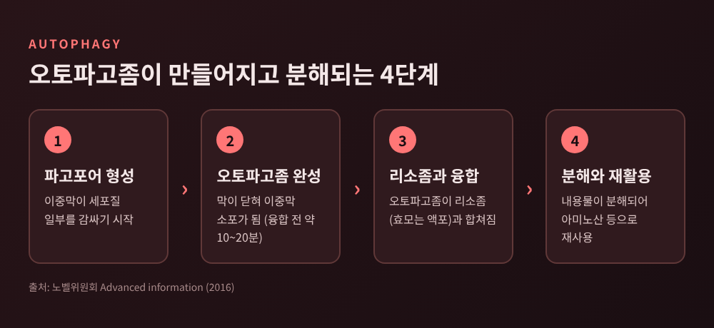
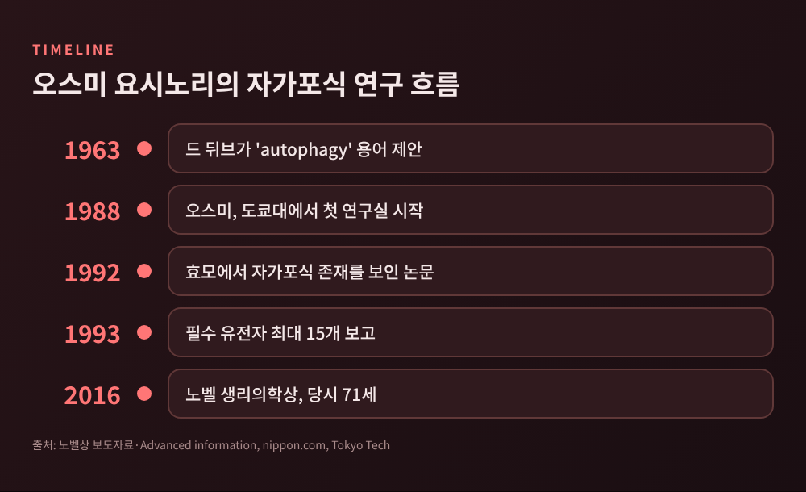
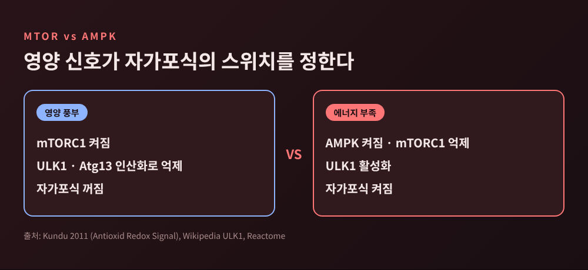
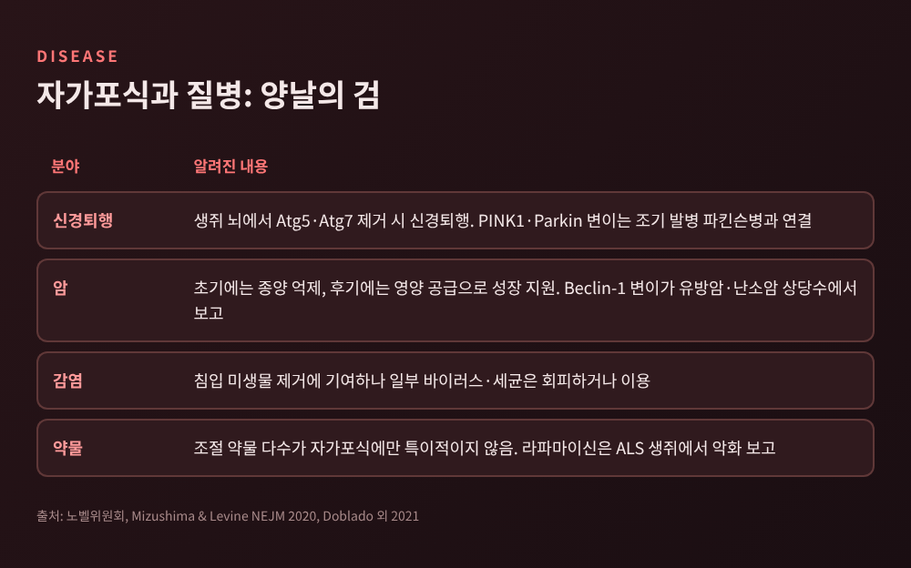
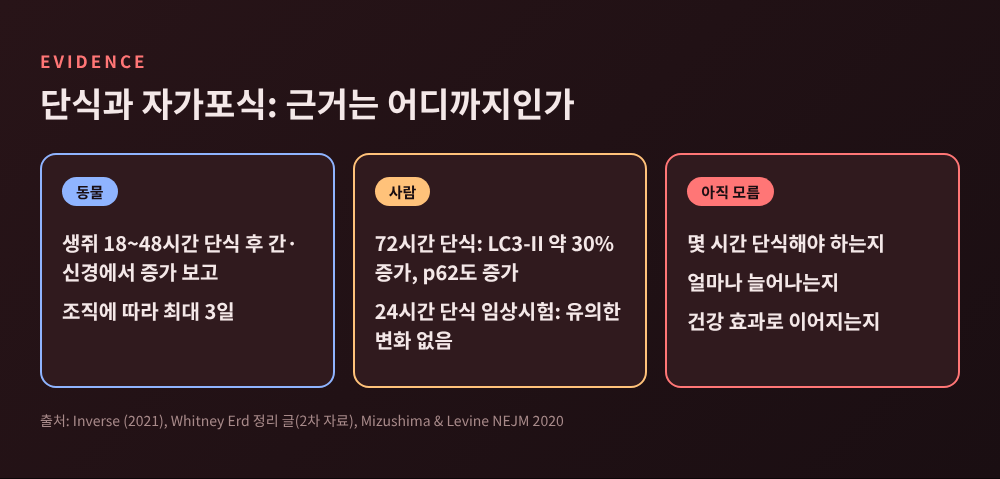

자가포식 원리: 오스미 노벨상 연구와 단식 건강설의 과학적 한계

3줄 요약
- 이 현상은 세포가 자기 일부를 리소좀에서 분해해 재활용하는 과정이며, 영양 상태에 따라 mTOR와 AMPK가 스위치를 조절합니다.
- 오스미 요시노리는 효모 실험으로 필수 유전자를 찾아 2016년 노벨 생리의학상을 받았습니다.
- 단식이 사람에서 얼마나, 언제 이 과정을 켜는지는 아직 모릅니다.
오늘은 세포가 스스로를 분해하고 재활용하는 자가포식의 원리를 정리해 보려 합니다.
2016년 노벨상으로 유명해진 개념이지만, 최근에는 단식 열풍과 엮여 과장된 설명도 많이 보입니다.
기초 원리부터 질병과의 관계, 그리고 건강 정보를 읽을 때의 한계까지 차례로 짚어 보겠습니다.
■ 세포가 스스로를 먹는다는 것
자가포식(autophagy)은 그리스어로 '자기'와 '먹다'를 합친 말입니다.
크리스티앙 드 뒤브가 1960년대에 이 이름을 붙였고, 어드밴스드 정보에는 1963년으로 적혀 있습니다.
당시에는 리소좀 안에서 세포 물질이 보인다는 관찰이 출발점이었습니다.
작동 순서는 이렇습니다.
먼저 이중막 구조의 파고포어가 세포질 일부를 감쌉니다.
막이 닫히면 자가포식소체, 곧 오토파고좀이 됩니다.
이것이 리소좀과 융합하면 내용물이 분해됩니다.
낡은 단백질 복합체나 너무 커서 다른 방식으로는 처리하기 어려운 세포소기관이 이렇게 정리됩니다.
오토파고좀은 오래 머물지 않습니다.
융합하기까지 약 10~20분밖에 존재하지 않아서, 초기 연구자들이 붙잡기 어려웠습니다.

■ 효모 한 줄기에서 시작된 오스미의 발견
예전에 액포는 세포의 쓰레기 저장고쯤으로 여겨졌습니다.
오스미 요시노리는 1988년, 43세에 도쿄대 부교수가 되어 처음 자기 연구실을 열었습니다.
그는 "아무도 연구하지 않았기 때문에" 액포를 골랐다고 말했습니다.
실험의 핵심은 액포 안의 분해 효소가 없는 돌연변이 효모였습니다.
이 효모를 굶기면 분해되지 못한 자가포식체가 액포 안에 쌓였고, 광학현미경으로 볼 수 있었습니다.
1992년 효모에도 이 현상이 존재한다는 논문이 나왔습니다.
이 표현형 덕분에 유전자 스크리닝이 가능해졌습니다.
첫 번째 돌연변이 APG1은 자가포식체를 쌓지 못했고, 질소가 없는 배지에서 야생형보다 빨리 죽었습니다.
1993년에는 필수 유전자가 최대 15개라는 보고가 이어졌습니다.
다만 이 수치는 자료마다 다릅니다. 브리태니커는 14개, 도쿄공대 기사는 ATG 유전자 18개로 적고 있어, 노벨위원회 기준인 15개를 따랐습니다.
그가 남긴 말 가운데 인상적인 것은 이것입니다.
"내 연구 결과는 모두 현미경 관찰에서 시작됐다."
논문 수도 달라졌습니다. 1990년대 초 연간 약 10편이던 관련 논문은 2012년에는 2,000편을 넘었습니다.
2016년 10월 3일, 71세의 오스미는 "자가포식 메커니즘의 발견"으로 노벨 생리의학상을 받았습니다.

■ ATG 단백질: 막을 만드는 부품들
효모에서 찾은 유전자들은 ATG, 즉 autophagy-related 이름으로 통일되었습니다.
이 단백질들은 크게 세 무리로 나뉩니다.
첫째는 개시 복합체입니다. 효모에서는 Atg1 키나아제를 중심으로 Atg13, Atg17, Atg29, Atg31이 함께 움직입니다. 포유류에서는 ULK1 복합체가 같은 일을 맡습니다.
둘째는 PI3K 복합체입니다. Vps34, Vps15, Atg6(포유류의 Beclin-1), Atg14가 인지질 PI3P를 만들어 다른 Atg 단백질을 막으로 불러 모읍니다.
셋째는 두 갈래의 유비퀴틴 유사 결합 반응입니다. 한쪽에서 Atg12가 Atg5에 붙어 Atg16과 복합체를 이루고, 이것이 다른 쪽에서 Atg8을 인지질에 붙이는 효소로 일합니다. 지질이 붙은 Atg8이 막의 신장과 융합을 이끕니다.
포유류의 Atg8 짝이 LC3입니다.
연구실에서 오토파고좀을 확인할 때 가장 흔히 쓰는 표지자이기도 합니다.
이 장치는 효모와 포유류 사이에서 매우 잘 보존되어 있습니다.
Atg5가 없는 생쥐는 태어날 때는 정상처럼 보이지만 생후 첫날을 넘기지 못합니다. 수유 전의 굶주림을 견디지 못한 것으로 해석됩니다.
■ 스위치는 mTOR와 AMPK
세포는 언제 이 과정을 켤지 어떻게 알까요.
답은 영양 센서 두 개에 있습니다.
영양이 풍부하면 mTORC1이 켜집니다. 이 키나아제는 ULK1과 Atg13을 인산화해 ULK1의 활성을 눌러 둡니다.
아미노산, 성장인자, ATP가 줄어들면 억제가 풀리고 ULK1 복합체가 분해 과정을 시작합니다.
효모 연구에서도 같은 구도가 확인됩니다. TOR가 꺼지면 탈인산화된 Atg13이 Atg1에 붙어 신호가 켜집니다.
에너지 센서 AMPK는 반대편에서 힘을 보탭니다.
AMP가 오르는 기아 상태에서 활성화되어 mTORC1을 억제하고, ULK1도 직접 인산화해 활성을 높이는 것으로 보고되었습니다.
깨어난 ULK1은 Beclin-1을 인산화해 PI3K 복합체를 가동합니다.
정리하면 이렇습니다. 영양이 많으면 mTORC1이 브레이크를 밟고, 에너지가 모자라면 AMPK가 액셀을 밟습니다.
인슐린과 영양은 억제 쪽, 낮은 세포 에너지는 촉진 쪽입니다.
다만 AMPK가 인산화하는 ULK1 잔기 번호는 문헌마다 달라서, 여기서는 번호를 적지 않았습니다.

■ 질병과의 관계: 양날의 검
노벨위원회는 이 과정의 이상이 파킨슨병, 제2형 당뇨병, 암과 연결된다고 정리했습니다.
구체적으로는 이런 사례들이 있습니다.
신경퇴행에서는 생쥐의 뇌에서 Atg5나 Atg7을 없애면 신경퇴행이 나타납니다.
손상된 미토콘드리아를 골라 제거하는 미토파지에서는 PINK1이 손상된 미토콘드리아 외막에 쌓이면 유비퀴틴을 인산화하고, 그 신호로 Parkin이 불려 옵니다. PINK1과 Parkin 변이는 조기 발병 파킨슨병과 연결됩니다.
암에서는 사람의 유방암과 난소암 상당수에서 Beclin-1 유전자의 변이가 보고되었습니다. 한편 암에서의 역할은 한 가지가 아닙니다. 초기에는 유전체 안정성을 지켜 종양을 억제하고, 나중에는 종양에 영양을 공급해 성장을 돕는다고 알려져 있습니다.
감염에서도 양면이 있습니다. 침입한 미생물을 제거하는 데 쓰이지만, 일부 바이러스와 세균은 이를 피하거나 오히려 이용합니다.
그래서 '활성화하면 좋은 것'이라는 단순한 결론은 나오지 않습니다.
리소좀을 막는 약인 하이드록시클로로퀸의 임상시험은 엇갈린 결과를 냈고, 라파마이신은 ALS 생쥐 모델에서 운동뉴런 변성을 오히려 앞당겼습니다.
이 경로를 조절하는 약 상당수가 다른 경로에도 작용한다는 점도 걸림돌입니다.

■ 단식과 자가포식, 어디까지 말할 수 있을까
여기서부터는 신중해야 합니다.
기아가 이 과정의 주요 유발 요인이라는 것은 분명합니다. 그러나 '몇 시간 굶으면 켜진다'는 말은 근거가 얇습니다.
동물 연구에서는 생쥐가 24시간 단식 후 신경에서, 18시간 단식 후 간세포에서 오토파지 구조가 늘었다는 보고가 있습니다. 조직에 따라서는 최대 3일이 걸리기도 했습니다.
사람은 사정이 다릅니다. 72시간 단식에서 표지자 LC3-II가 약 30% 늘었지만, 줄어야 할 p62도 함께 늘어 해석이 불분명했습니다. 4일 단식에서는 호중구에서만 활성이 늘었고 다른 백혈구는 변화가 없었습니다. 24시간 단식을 본 한 임상시험에서는 유전자 발현 지표가 통계적으로 유의하지 않았습니다.
측정 자체도 어렵습니다.
전자현미경은 세포의 아주 작은 부분만 보여 주고, 사람에게서는 여러 시점의 '흐름'을 따라가야 하는데 실행하기가 쉽지 않습니다.
일리노이대의 영양학자 크리스타 바라디는 단식이 이 과정을 일으킬 가능성은 높다면서도 "아직 모른다"고 말했습니다. 몇 시간 단식해야 하는지도 모른다고 덧붙였습니다.
또 지나친 활성화는 심부전이나 근육 소모와 연결되었다는 보고도 있어, 많을수록 좋다는 근거는 없습니다.

정리하면 이렇습니다.
이 과정은 영양 상태를 읽는 정교한 세포 청소 장치이고, 오스미는 효모 한 가지로 그 부품 목록을 처음 열었습니다.
예전엔 노폐물 창고로 보이던 액포가, 지금은 세포 재활용의 무대로 읽힙니다.
그러나 그 지식이 곧 '단식하면 건강해진다'는 결론을 보증하지는 않습니다.
"원리가 밝혀졌다는 것과, 그것이 내 식습관에 적용된다는 것은 다른 이야기입니다."
단식을 시도하시려는 분이라면 질환이나 복용 약이 있는지부터 의료진과 상의하시길 권합니다.
과학이 아직 모른다고 말하는 지점에서는, 같이 모른다고 말하는 편이 정직할 것입니다.